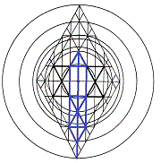

The Sermon on the MountIts Resonance within the Sephiroth

Matthew 5:3
Almost hypnotic in cadence, the beatitudes of the Matthew gospel promise
the approval of God and the bounty of his Life Breath to
all whose souls honor divine principles. Not pleasantries or random thoughts, the
beatitudes address the seats and operations of the Father's Holy Spirit in each of us, stirring our
attention and arousing our hope. These teachings establish
guardrails for the path that leads to fulfillment of the Ten Sayings that
came through Moshe; and they were given to open our ears, that we might hear; to clarify our vision, that we might see;
and to soften our hearts, that we might be healed.
Considered in light of the principles expressed in the beatitudes, the
ten sayings
of Moses are understood as holy prophecies that speak of God's love for
us, rather than as dictums to which we must adhere by exercise or
denial of personal will. When understood
as One, the voices of Moses, the prophets, and
the man who is "called" the
messiah in Matthew 1:16, proclaim the same path to redemption. The two-edged sword of
scripture holds overtones of betrothal that are more
compelling than its warnings against
disobedience; and the simple words of the beatitudes, delivered on a lowly hill of Galilee,
drive that point home: into the very darkness of our hearts.
Strengthening us
as it gives us hope, the Sermon on the
Mount is a song whose chorus rings clearly with the
words, "I will have mercy, not sacrifice."
When
the dark powers of the nations are driven out of souls, the
attributes of the Kingdom of Names
arise within us as HaShem awakens those soul attributes that have been dreaming in darkness, arousing
them
from deep sleep by the light of the Morning Star. Already in the hearts
of the worst of us,
Heaven's kingdom has always been advancing against out conscious minds,
under the auspices of the hidden presence of ImmanuAL.
At all times, through the depths and the heights of every moment of
every life, God's song of point and counterpoint calls upon us to enter
into the blessings stored up against the day Mashiyach owcwhy
shall guide us into alignment with the will and principles of
Father
hy.
This study approaches the beatitudes as they relate to
Jacob's Ladder, the symbol of the Tree of Life. It begins with focus on
the sphere of Malkuth, which speaks of manifestation of the Kingdom of
HaShem,
then shifts to a focus on postulations drawn from distant Kether, in
order to explore the context of the promised blessings. Personal
estimations of
paraneters are inadequate and, frankly, irrelevent. The beatitudes
encourage us to draw upon the righteousness of
hwhy for
guidance, as we shall be enabled by
HaShem. Correct focus brings appropriate blessings.
To proceed with one eye focused on kether;
the other, on malkuth is not so disorderly as it seems. This bifurcated approach is elegantly set forth in the saying, "As above, so
below." However, there are pitfalls to this
dual focus, which are addressed by the prophets and affirmed in the message
delivered to the angel at Ephesus.
The Churches of Asia, which house the seven candlesticks of the inward
menorah, are ignited by a single flame. We are heavenly worms of fire
buried in cocoons of flesh, and we will emerge as moths
drawn by the comforting
Light of Heaven, that we might alight without fear upon the hand of God
as it presses against our hearts.
What, then, do we make of the night? As evenings come upon us, we trust that mornings will follow,
comforted in expectations of a new day. But what of the night?
If we find our paths have dead-ended in the land of Canaan, where we
find ourselves slain daily by inward swords,
we are forced to acknowledge what little we perceive of inward darkness, trusting the Father
to be faithful
to his promise to forgive and to cleanse. The holy war we must fight is
wholly within each of us. The combattants are the
twins wrestling within the spiritual womb we perceive as our lives,
which are truly hidden with HaShem.
Jihad is God's
war, not ours; and he must fight for us. Our role search out and welcome his victory.
The twins that war in the womb of the soul strengthen us against the
outward adversity
we encounter in our lives. In the holy war, we measure the spiritual
darkness that presses upon inward conflict, longing for reconciliation and relief that will repair breaches,
turning the twins born of duality, making each his brother's keeper.
This study is intended to examine what the lenses of kabbalah can add to appreciation of
the beatitudes. Whatever the sephiroth contribute to understanding such matters
is welcome; for revelation, we recall, is given by the "littles."
I don't mean to suggest, therefore, that what follows is ground-breaking interpretation of the
gospel's words of
Y'shua. To be scrupulously honest,
I rely upon the prayers of brethren who read these words, that struggles with this text not be in vain.
To those who
think kabbalists make too much of imagery and numbers in scripture, whether
implied or explicitly stated, I offer reminder that the hairs of our heads are numbered,
a point to which the Essene Teacher of Righteousness gave cryptic emphasis. It's not presumptuous,
therefore, to
argue that the operation of numbers in the parables of scripture, stated
or implied, have purposeful,
intended significance.
The beattitudes recorded by
Saint Matthew are nine in number. As the sephiroth are ten, the
relevance of the nine blessings isn't immediately apparent. However, a tenth beatitude
is hidden in the precepts beginning with Matthew 5:13 and continuing, minimally, through the end of Matthew 7 in the teaching of the wise man who both hears and performs the sayings
that came by Y'shua.
This unstated, tenth beatitude is also affirmed in Revelation 22 by the words
of the angel, "Blessed is he that keepeth the sayings of this book."
Kingdoms are ordered by the operation of law,
however much grace may abound; and Malkuth,
which anchors the inward Kingdom of Elohim, is ordered by the spiritual precepts of
Elohim myhla. Y'shúa might have taught, "Blessed are
they who shall hear the words of Life and do them: for they shall dwell
securely." It's wonderful, however, that the Silent Voice, giving
utterance through Y'shua, a Son of Man, withheld a
blessing,
keeping it in reserve. Some shall imagine themselves worthy of the nine but shall be confounded by the tenth; so, also,
shall some see themselves as unworthy in the nine, but shall, by the tenth blessing, be confirmed in all to all, as it's written, "and the last, first."
There
is, perhaps, another reason there is not a tenth beatitude in the Srmon
on the Mount. Y'shua taught that the Kingdom-- Malkuth-- is like leaven hidden in measures of meal. Without digressing into what these measures of meal
might signify, we note that promised blessings explicitly mentioning the Kingdom
of Heaven occur twice in the beatitudes.
Why not three times, since the Kingdom of Names is hidden in three measures
of meal?
The answer is that the inward Kingdom is not
of this world, this cosmos, this age; and its leavening presence must remain hidden until
appearance of the full manifestation of the Sons of God. Remaining also hidden, then, is the fullness of God's blessings. The
full parameters of God's blessings and the sayings of Moshe, as well,
can be understood and
welcomed only with maturation of
ImmanuAL's Kingdom-- with the
manifestation of God's Malkuth within each of us;
for it is said of those numbered among those who shall share that reality, that in their mouth is found no guile: for they are without fault before the throne of
la.
The precepts of the Sermon on the Mount are the distilled essence of Y'shua's doctrinal
contribution to the Kingdom of Names.
They are the very fabric of the righteous mammon with which the Father clothed
him during his ministry. To hold them in one's heart-- not as the words of an individual, but as
the guiding
L precepts
a received
through the individual who stood among his peers, giving true
and faithful testimony of the Inward Presence
creating the fruit of his
lips as he channeled the words in the moments he received them of ImmanuAL's
inward, silent voice. To cherish those words while reading other scripture is to stand
openly before the open Door of that same Presence, from which
emanates every nuance of sound interpretation.
Kether:
Crown, Intelligence
Blessed are the poor in spirit, for theirs is the kingdom of heaven. |
|
Those whose natural spirits are deflated, impoverished, are welcomed within the
Kingdom of Names. Their own estimations of who they are and what is
required of them leave them with no epectation of relief in spiritual or worldly
realms. Perishing from lack of vision and constantly sifting through nuggats of
their thoughts, they find
no wisdom: no traces of gold. The silver lining of understanding
eludes them, also; so they pan through the same cloudy streams of
thought over and over,
willing to settle for discovery of any shining thing. Hemmed in by piles
of mud, they lament
the inadequacy of their endeavors and lower expectations, resolving to endure as best they can
so long as they can. Spiritual paupers daring to hope for deliverance, they
await a flooding of the headwaters, as in the days of Noah.
Adam Kadmon, the "Projection of Man," is the symbol of the Tree of
Life. Kether is the topmost of its ten spheres, the sephiroth. Often
refered to as "The Supreme Crown," Kether is, in one aspect, the sphere of
intelligence. The human mind is the tool by which mankind has achieved dominion over
all other species on Earth, often to his own harm and shame; and man's
intelligence has been leveraged as the means to subject less endowed creatures
to the rule of his will, at the peril of all who live.
When rightly applied, intelligence is the faculty by which man can measure the movements of
God's Spirit within his frame of consciousness, his field of being.
As a creature, the
Life Breath energizes every cell of the human body, supplying oxygen for the
divine fire within every heartbeat. Though it is intrinsic to his
metabolism, natural man isn't able to measure
the the Spirit's movements with the rational mind. Only the heart can
see; and that vision becomes operative, only when man's faculties are opened by an act of God.
Natural man is haunted when exposed to the hidden Presence, which
he sees as alien to his sense of who he is. When the Presence begins to
lift its head him, his heart and mind are consumed in a struggle to
comprehend what is going on. Like dust arising from a pivot point upon
dry ground, the dilemmas raised by the Indwelling cannot be resolved by
willful efforts of the heart
and mind, whose measurements must be braided together by
the Father's hands. While the root (heart) and essence
(mind) of a man's intelligence
struggle together within the core of mortal man, their intelligence also operates on scales far beyond the confines of
what is revealed by life on Earth; and
the path to effective
measurement of this greater intelligence requires humility, the
impoverishment of the natural spirit of man as creature.
King Solomon
asked who could measure "the spirit of Man that goeth upward, and the spirit of the beast that goeth downward to the earth."
Well, from both Hebrew and Greek scriptures, the words most commonly
translated as "spirit" are more properly rendered as "breath."
The movements of
human spirit in the King James version of the
Ecclesiastes parable, then, are likened to the inhale (the
downward trajectory of untainted air) and the exhale (the upward
trajectory of spent breath).
Air is the substance of the second
heaven, and breathing it in lifts us up, renews us. However, the inhale
makes us debtors to the atmosphere, and we have no choice but to repay the skies
of heaven with our exhales, which carry the savor, the scent, of who we
are and what we've been up to. Breathing is a transaction between heaven
and earth.
The exchange of the contrary winds of natural breath, correspond to
the interplay of the two laws that drive the whirlwind of which Paul
wrote in Romans 7. Like all beasts of Earth, we inhale the Breath of Life,
and we exhale the savor of the utilization of each breath we draw, whether unto
life or unto death. Caught up by the whirlwind, the tainted residue of
our essence travels with the
exhale, where it merges with fresh air and is cleansed of its toxicity,
made ready to be drawn again toward the ground as it surrenders
the weight of its savor within celestial realms, that it might return
to the gates of paradise and the throne of Father
hy.
The Breath of
hwhy has been passed from
parent to child from the days of the first man, vivifying
humanity with the inward Presence of the Immortal One, who daily
humbles himself by dwelling within mortal tabernacles for the
perfection of mortal souls.
From the moment of father Adam's first Breath, the Projection of
hy--
his Cry, his Shout of Life-- entered mankind; and stewardship of that
divine Breath transformed the man, a creature of clay, into a living soul,
a creature of light. As
host of the Breath, the man Adam served as prototype of the temple
formed not by handiwork, but by the Projected
Breath of God. A son carries the father's breath forward, which is the reason Torah calls
Adam the Son of God.
The Blessing |
|
The apostle John characterized the Breath of God as the Word,
the Logos: the Pattern of Creation; for without the Pattern and
its dynamics, nothing was made that is made. The
Pattern of all things is of God, contributing to our understanding of
his essence through its diverse iterations. Because the attributes
of the Father are imprinted within the features of Creation, it is
understood that all things came to be as though they are "sons"--
projections-- of the Father's essence. Messiah literally fills all in
all. Although the universe
cannot contain its Creator, it is suffused with the Creator's projected
Pattern. The primal shout, "Let there
be," is his
"Son," and it fills all in all, which is why the Angel of his
Presence is called the Only-Begotten. Imprinted with the essence of
the divine pattern, all things live and move and have their being
because of the Father's proclamation that there should be Light.
Sacred geometry, the royal pattern, was
released into the cosmos by
the Breath of God. That Pattern-- that Logos-- is called
Yahushua
owcwhy,
the "Shout of Father hy,"
his Battlecry. The Interface between the Creator and Creation, Yahushua is
the Angel of God's Presence; for he was
with and of God from the beginning. Yahushua rides upon the
command, "Let there be"; for without that Presence, there is no thing.
By
the agency of this Interface, the Father enlivened the first man
with his Breath, his Spirit, his Essence, his Pattern.
This is why Adam
is the called the
first and the last: the first, who is also found standing
with the last.
Adam is
the "Son of God," the cornerstone of the temple made
without hands; for in Man are joined the collective of the spiritual Names
understood as
the Sons of Man, the Children of God.
If a man does not recognize the
pattern's presence, still it is there. ImmanuAL's hidden Presence
proclaims the Father's will from within the
thick darkness of unbelieving hearts, projecting the Pattern until such
time the Father has chosen to reveal
himself through the operations of the Interface. Whether unknown
by doubters or known by believers, the Interface is also called ImmanuAL, God within us.
Doing the Father's bidding because he is of the Father, the Interface is busy perfecting the
temple of humanity in accordance with the Pattern of which he is
the fullest expression, to the end that all
living souls shall be raised up and presented before the Father's throne without spot or blemish
at the last day,
made ready to inhabit immortal tabernacles capable of exploring the nuances of the Father's
Essence in all that is and shall forever be.
To be clear: the
blessed fullness of ImmanuAL's
Presence was first seen in the life of true and faithful
Y'shua, whose ministry bore witness to the will and the power of
Father hy.
As they served, Moses and the prophets didn't know that their faces glowed; but Y'shua knew
the significance of his position. Standing in their company in the
presence of witnesses, he was transfigured as recognition of his full measurement of the operations of Yahushua
within his bodily walk on Earth. By
following in his footsteps as grace shall allow, therefore, each of us
shares the promise of standing before the throne of Yah in white
raiment alongside Y'shua
and the storied saints of scripture.
Resting in the Father's Breath, therefore, we
are to exercise faith in his Wisdom by
accepting Messiah's cross as our own. We are to mpoverish ourselves. We
must be willing to suffer the penalties of
error in our ministries; for by his stripes we are healed. In dying,
Y'shua teaches, we will not surely die; for some will pass from life unto Life
without tasting death. Of the rest it is written, "If you do
well, shall you not be accepted?" Through his position as host of
owcwhy-- as body of the Projected Breath of Elohim, the
Interface between Heaven and Earth-- Y'shua understood that every spent breath
of every creature on Earth returns to the Father's
care,
whatever its savor.
The man Y'shua and his church have been tarnished by error due to the
operations of
inertia inherent in human affairs, as in the physical uniuverse. The
fall following Golgotha came quickly upon the Essene believers, prompting
the lament, "The mystery of iniquity doth already work." Confessing
their errors, their sins, these same men understood that none but one
shall be tarnished with accusation at the end of days. If any is ashamed of errors,
that shame accuses brethren who share the same errors.
Impoverish the spirit
of manifest destiny at the expense of less fortunate men. Such thinking isolates you, one from another. Be willing to
humble yourself, as did Y'shua at the tables of publicans and sinners.
Dare to step again into the ditches with which you are familiar, just far enough to give a fallen
brother the
boost he needs to heal and regain his way. Although an
unknowable future lays before us all, we know that no accusation will
stand in the fullness of time. If the Son, the Indwelling, shall make
you free, you are free, indeed. Though our errors be as scarlet, they
shall be white as snow. Although we became unclean through ignorant
carelessness, innocence perserveres in us. Practices brought guilt upon us; but because
of the active agency of
Yahushua, the Interface, Father hy winks at our
errors as we recognize and welcome the inward Presence. HaShem stretches
out his arms to us as both Redeemer and Deliverer: as
both Author and Finisher of the faith he began in us.
|
.gif)

.gif)
.gif)
.gif)
.gif)